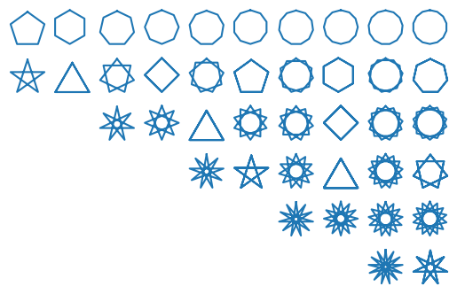

4. Functions and Classes: Exercise Solutions
Contents
4. Functions and Classes: Exercise Solutions#
import numpy as np
import matplotlib.pyplot as plt
%matplotlib inline
1. Functions#
Define the following functions and show some sample outputs.
Factorial of n: \(1 \times 2 \times \cdots \times n\).
def factorial(n):
"""factorial of n"""
f = 1
for i in range(n):
f = f * (i+1)
return f
def factorial(n:int):
"""factorial of n"""
if n < 0 or type(n)!=int:
print('n should be non-negative integer.')
return
elif n==0:
return 1
else:
return factorial(n-1)*n
factorial(-1)
n should be non-negative integer.
for n in range(10):
print(factorial(n))
1
1
2
6
24
120
720
5040
40320
362880
For a circle of radius r (default r=1), given x coordinate, return possible y coordinates (i.e., both positive and negative).
def circley(x, r=1):
"""y coordinate for given x for a circle of radius r"""
if abs(x) > r:
return
elif abs(x) == r:
return 0.
else:
y = np.sqrt(r**2 - x**2)
return y, -y
X = np.linspace(-1.2, 1.2, 13)
for x in X:
print(circley(x))
None
0.0
(0.5999999999999999, -0.5999999999999999)
(0.8, -0.8)
(0.916515138991168, -0.916515138991168)
(0.9797958971132712, -0.9797958971132712)
(1.0, -1.0)
(0.9797958971132712, -0.9797958971132712)
(0.9165151389911681, -0.9165151389911681)
(0.8, -0.8)
(0.6000000000000003, -0.6000000000000003)
(2.1073424255447017e-08, -2.1073424255447017e-08)
None
for i in range(-6, 7):
print(circley(0.2*i))
None
0.0
(0.5999999999999999, -0.5999999999999999)
(0.7999999999999999, -0.7999999999999999)
(0.916515138991168, -0.916515138991168)
(0.9797958971132712, -0.9797958971132712)
(1.0, -1.0)
(0.9797958971132712, -0.9797958971132712)
(0.916515138991168, -0.916515138991168)
(0.7999999999999999, -0.7999999999999999)
(0.5999999999999999, -0.5999999999999999)
0.0
None
Draw a star-like shape with n vertices, every m-th vertices connected, with default of n=5 and m=2.
def star(n=5, m=(n-1)//2, r=1):
"""Draw a star with n>=5 vertices."""
if n < 3:
print('n should be 3 or more.')
return
if m == None:
m = (n-1)//2
xy = np.zeros((n+1, 2))
th = 2*np.pi*m/n
for i in range(n):
xy[i] = [r*np.sin(i*th), r*np.cos(i*th)]
xy[-1] = xy[0]
plt.plot(xy[:,0], xy[:,1])
plt.axis('square')
plt.axis('off')
N = 10
M = 7
for n in range(5, 5+N):
for m in range(1, min((n+1)//2, M)):
plt.subplot(M, N, (m-1)*N + n-4)
star(n, m)

Any function of your interest
2. Classes#
Define the
Vectorclass with the following methods and test that they work correctly.
norm,normalize: as in the previous class (use L^p norm, with default p=2).scale(s): multiply each component by scalar s.dot(v): a dot product with another vector v.
class Vector:
"""A class for vector calculation."""
default_p = 2
def __init__(self, arr): # make a new instance
self.vector = np.array(arr) # array is registered as a vector
def norm(self, p=None):
"""Give the L^p norm of a vector."""
if p == None:
p = self.default_p
y = self.vector ** p
z = np.sum(y) ** (1/p)
return(z)
def normalize(self):
u = self.vector/self.norm()
self.vector = u
def scale(self, s):
u = s * self.vector
self.vector = u
def dot(self, v):
return(np.sum(self.vector * v.vector))
x = Vector([0, 1, 2])
x.vector
array([0, 1, 2])
x.scale(3)
x.vector
array([0, 3, 6])
y = Vector([1, 2, 3])
x.dot(y)
24
Save the class Vector as a module
vector.py.
Import the module and test how it works.
import vector
---------------------------------------------------------------------------
ModuleNotFoundError Traceback (most recent call last)
Cell In[15], line 1
----> 1 import vector
ModuleNotFoundError: No module named 'vector'
import importlib
importlib.reload(vector) # This is needed after updating a module
<module 'vector' from '/Users/doya/Dropbox (OIST)/Python/ComputationalMethods/vector.py'>
x = vector.Vector([0, 1, 2])
x.vector
array([0, 1, 2])
x.norm(p=1)
3.0